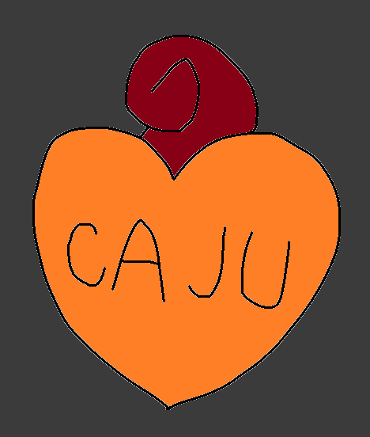

Oi, amor. Nesse começo de ano estivemos tendo tantas brigas q deve ter passado de 15 ja, nos dois sabemos que está complicado e a culpa é de nos dois. Eu não gosto nem um pouco disso.
Mas indo direto ao ponto, depois desses dias de primeiro eu tendo feito uma atitude errada de não conseguir ter uma conversa consistente com vc e admitir tarde demais de que estava ocupado no momento em que você precisava conversar foi muito ruim. Eu me arrependo disso. No dia seguinte nos estavamos nos falando ate que bem, vc estava o dia meio mal cmg sim e eu tentei te animar, deu um pouco certo e passamos o dia bem. Sexta nos passamos o dia bem, mas por volta das 19 horas vc começou a implicar de eu estar online e nao te respondia e tambem puxou sobre a mesma coisa soq durante a aula, sendo que eu tava sim respondendo e na sala expliquei com quem eu estava conversando, aí eu realmentee nao entendi o problema de eu conversar com outra pessoa mesmo se for rafael enquanto converso com vc mas essa discussao acabou rapido. Mas vc continuou seca e chateada eu fiz vc desabafar e finalmente conversamos. Ao menos tentei conversar, vc n tava com paciencia alguma e simplesmente nao entendeu nada doq falei. Admito que no começo eu não havia entendido muito o centro do seu chateamento pois vc falava de quarta feira e quinta feira juntos. Me xingou como se eu tivesse feito muito mais doq realmente fiz de errado, eu nao faço ideia do pq vc começou a agir assim misturando tudo e agindo como se fosse algo muito pior. Isso me cansou bastante. Mas ok. E enfim ontem. estavamos nos falando bem. Falamos sobre estudos, concursos, e outras conversas leves e tranquilas, ate nos mandamos nuds kkkkkk. Mas enfim chegou madrugada, teve sim um momento em que demorei quase 20 mins pra responder voce, admito que estava jogando, mas tava jogando sozinho. E vc tambem tava demorando as vezes pra responder e aparentemente estavamos bem dboa. Dps deitei e ficamos conversando um pouco e enfim teve a briga mais idiota desses dias. Eu mandei uma foto e pedi pra vc mandar tbm, vc mandou, dps eu quis mandar outra, entendo que ate eu mandar a foto tava estranho pq demorei 5 mins pra mandar, mas dps eu expliquei o pqq eu demorei, foi pq como eu uso o brilho do celular e nao o flash pra te mandar fotos no escuro eu fiquei ajustando, porem o celular ficou aumentando sozinho e ficava muito claro, ai tive que diminuir 2 vezes e tbm n tavam saindo boas. Voce com certeza vai fazer a mesma zuaçao idiota que fez ontem dps de ler isso dnv. Ms enfim. Vc nao acreditou e falou q eu estava sim conversando com outro alguem, depois disso mandei print da minha home do whatsapp mostrando os horarios da nossa conversa q foi 01:57 e a ultima q tive tirando nos q foi com o rafael as 00:44. Isso a prova deq nao estava conversando com outro alguem naquele momento. E vc do msm jeito nao ligou pra isso e começou a debochar pkrlh de mim, me deixando puto e triste ao msm tempo. Eu n sabia se vc estava fazendo de graça pra me irritar, e se fosse nmrl, pq vc faria isso? Enfim chegou a um momento q eu cansei disso tudo e te bloqueei por um tempo apos vc mandar dnv um audio debochando da mrd da situaçao da foto. Dps vc quis falar e debochar dnv pelo instagram, eu falei pra parar com a palhaçada q vc tava fazendo. E falando dnv da prr da foto e eu expliquei dnv e dps de literalmente puxar o assunto da foto me disse fds, cara?? Me diz pq vc tava sendo tao insuportavel. E denovo falor de quarta como se nos ultimos 2 dias nos nao tivessemos falado disso, isso me deixou puto pra crl a ponto de te xingar pkct. Eu continuo nao achando que ficar te respondendo de 10 em 10 minutos era o certo, ainda mais q vc queria conversar. Mas dnv vc fez isso de juntar tudo e começar a reclamar de algo q fazia 4 dias. Dps eu me acalmei e falei com vc dnv ms n serviu de mta coisa. Enfim, eu tbm to cansado dessas brigas idiotas, ainda mais dessa. Ms entendo q se n resolvermos esse assunto de vez nos vms nos afastar, principalmente vc. E oq eu menos quero é isso. Eu n quero q esse ano seja tao ruim de brigas assim, motivos tao idiotas pra brigas eq no final puxam algo de dias atras. N acho q vc va levar esse texto a serio, ms perceba q se eu nao amasse de vdd vc e n me esforçasse por nos eu n estaria perdendo o meu tempo de estudos escrevendo um texto sobre uma briga saturada q eu poderia simplesmente deixar p tras e fingir q nd aconteceu e começar a me afastar de vc. É isso. Saiba q msm com meus erros e com seus surtos eu ainda amo vc e me esforço por nos. E me desculpa. Beijos, Julliana, meu amor.
